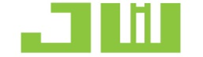

eSLOG investiert risikoorientiert in globale Hard-Tech-Innovatoren. Wir verbinden Kapital mit robuster deutscher Industrie-Infrastruktur zur Skalierung von autonomer Intralogistik und KI-Steuerung.
Künstliche Intelligenz und Robotik transformieren die Logistik. Unsere Investitionsentscheidungen basieren auf technischer Validierung, kommerzieller Skalierbarkeit und messbarer Effizienzsteigerung in der unbemannten Intralogistik.
Über Risikokapital hinaus bieten wir direkten Zugang zu europäischen Testumgebungen, Komponenten-Lieferketten und automatisierter Fertigungsinfrastruktur.
Autonome Mobile Roboter (AMR), Fahrerlose Transportsysteme (FTS/AGV) und KI-Sortiertechnik für unbemannte moderne Lagerinfrastruktur.
SaaS-Plattformen mit Machine Learning für Echtzeit-Routenoptimierung, vorausschauende Nachfrageplanung und Bestandssteuerung.
Autonome Zustellfahrzeuge, Frachtdrohnen und intelligente Micro-Fulfillment-Center zur Optimierung der Zustellkosten.
AROC Technologies GmbH mit Sitz im bayerischen Großwallstadt ist ein deutsches High-Tech-Unternehmen, das auf die Entwicklung, Herstellung und den Betrieb maßgeschneiderter Mehrzweck-Industrieroboter sowie digitaler Prozessoptimierungslösungen für den Einzel- und Großhandel spezialisiert ist.
Durch die Investition von eSLOG erhält AROC Zugang zu fortschrittlichen Komponenten-Lieferketten, skaliert seine intelligenten Automatisierungslösungen in der Intralogistik und beschleunigt die kommerzielle Marktdurchdringung in Europa und Asien.

Wenn Ihr Team über fortschrittliche Logistik-KI-Technologie oder Robotiklösungen verfügt und Kapital sowie strategische Branchenressourcen sucht, laden wir Sie ein, eSLOG zu kontaktieren.